Taş, metal ve atmosfer — üç iş, tek paket
Aynı kameralardan gerçek Unity görüntüleri. Taşlar arasındaki sert ton farkları azaltıldı; kazan kapaklarında kesintisiz metal yüzey ve seyrek birleşim çizgileri kullanıldı; uzak fırınların renk ve kontrastı geri çekildi. Referansın tamamlandığı iddiası değil, yüzeylerin birlikte okunması için bir adım.
Haritanın bütünlüğü
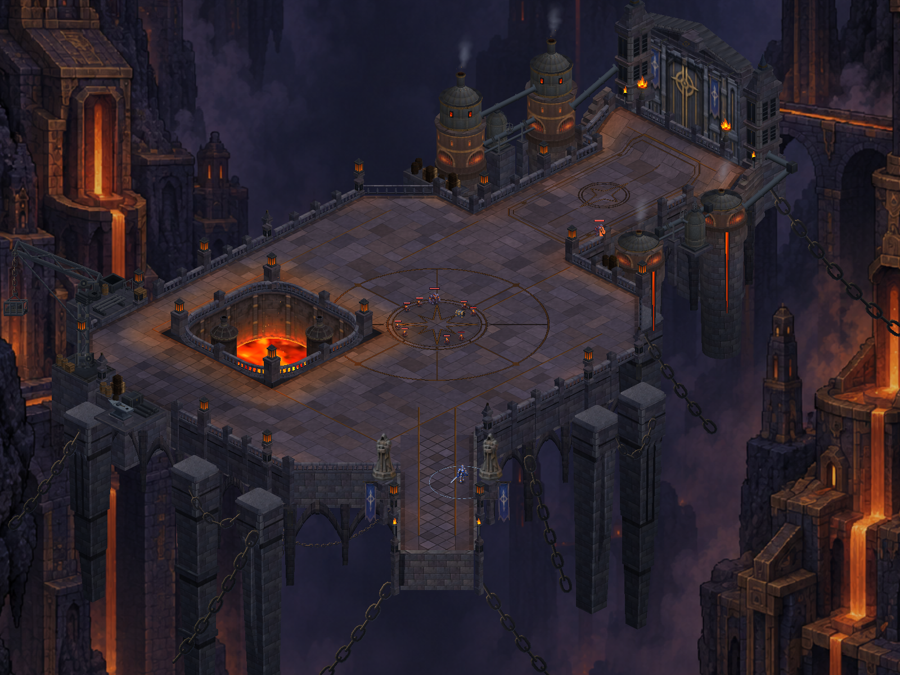
Önce Sonra
SonraTaş ve karakter okunabilirliği
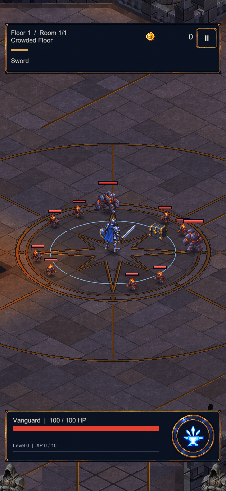
Önce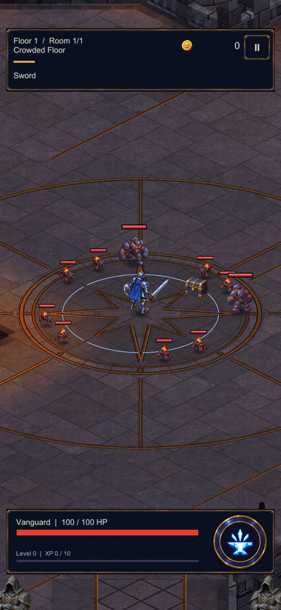
SonraKazan kapağının metal biçimi
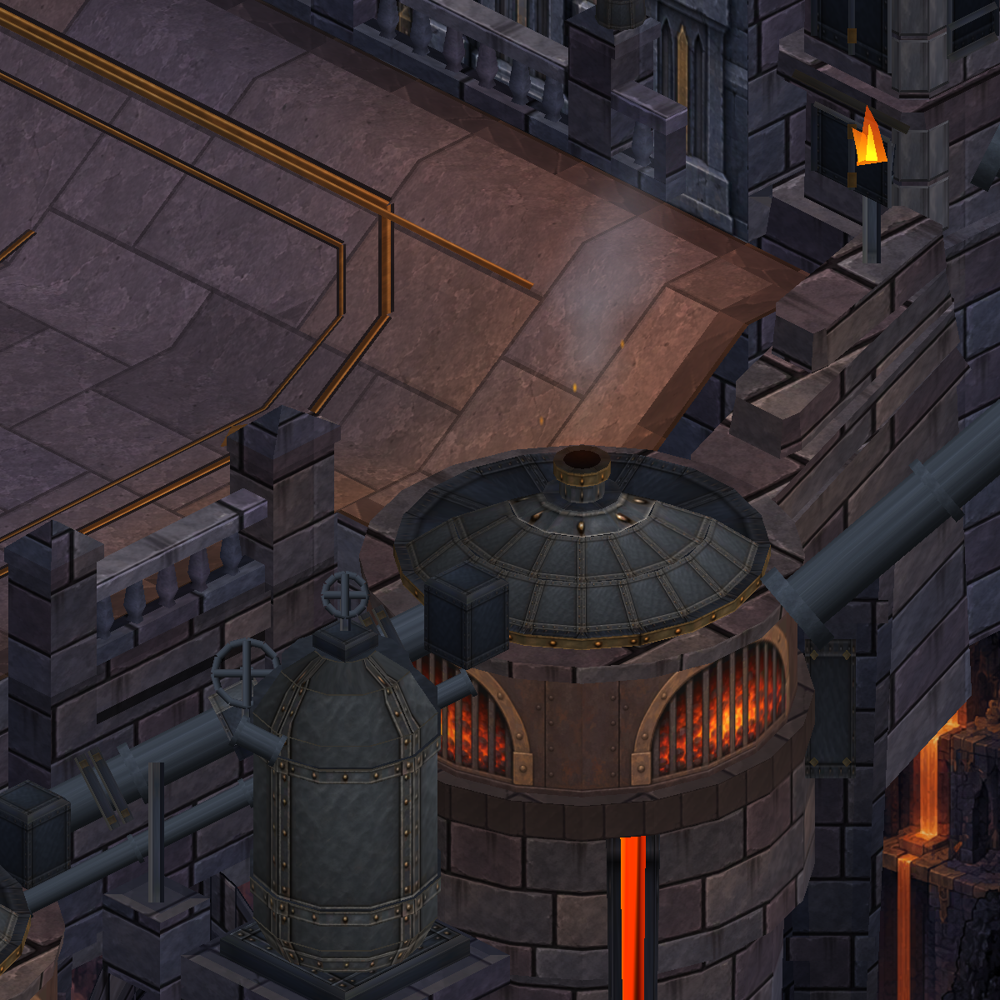
Önce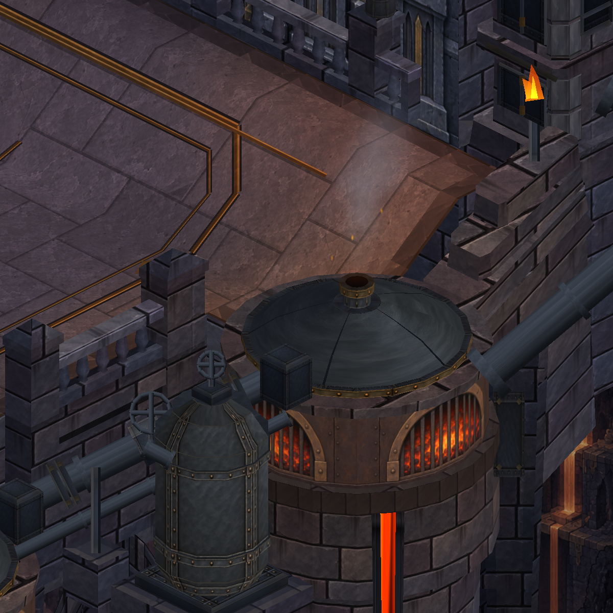
SonraKapı ve yaklaşım
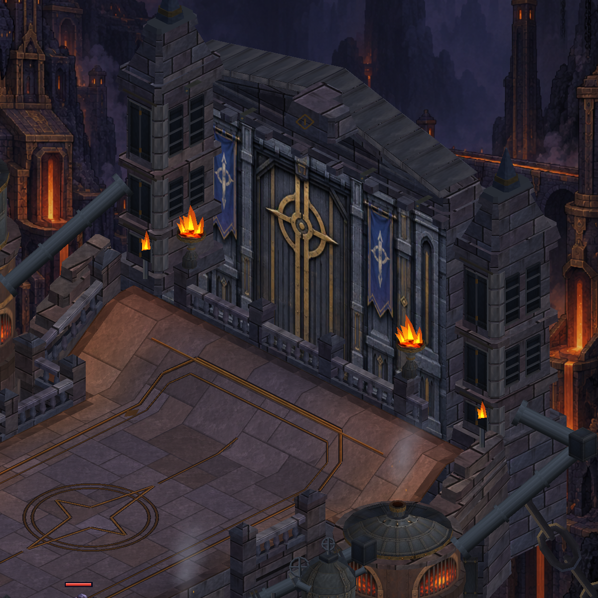
Önce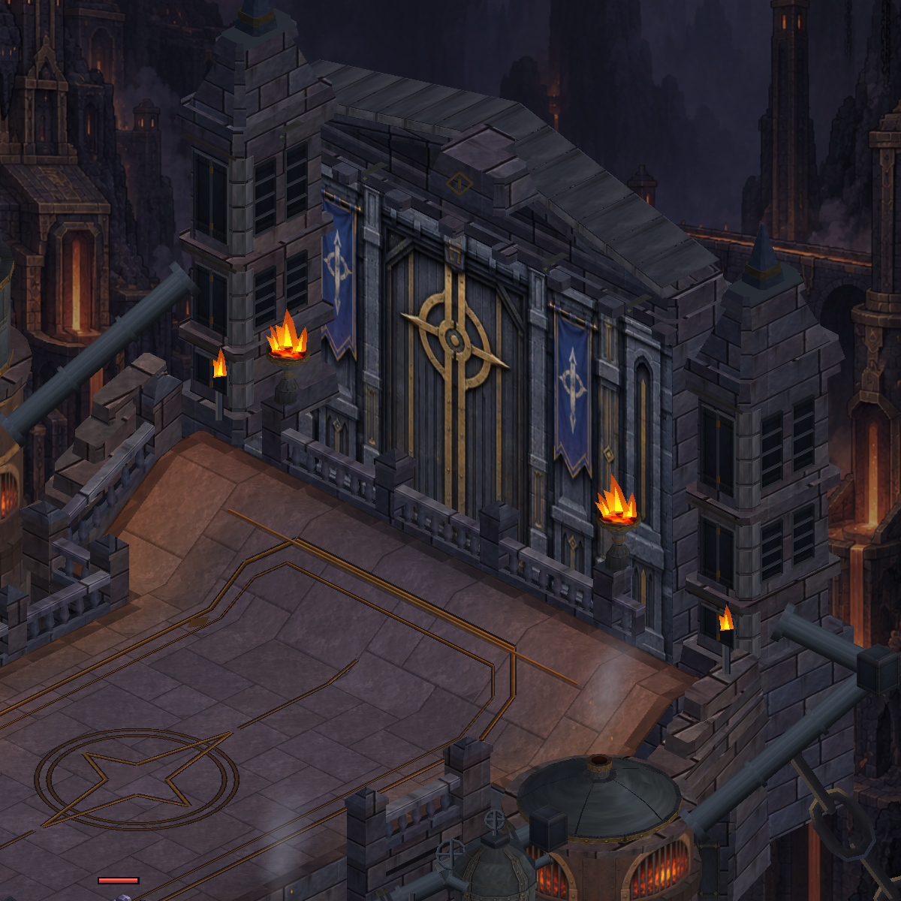
SonraKöprü ve uzak fırınlar
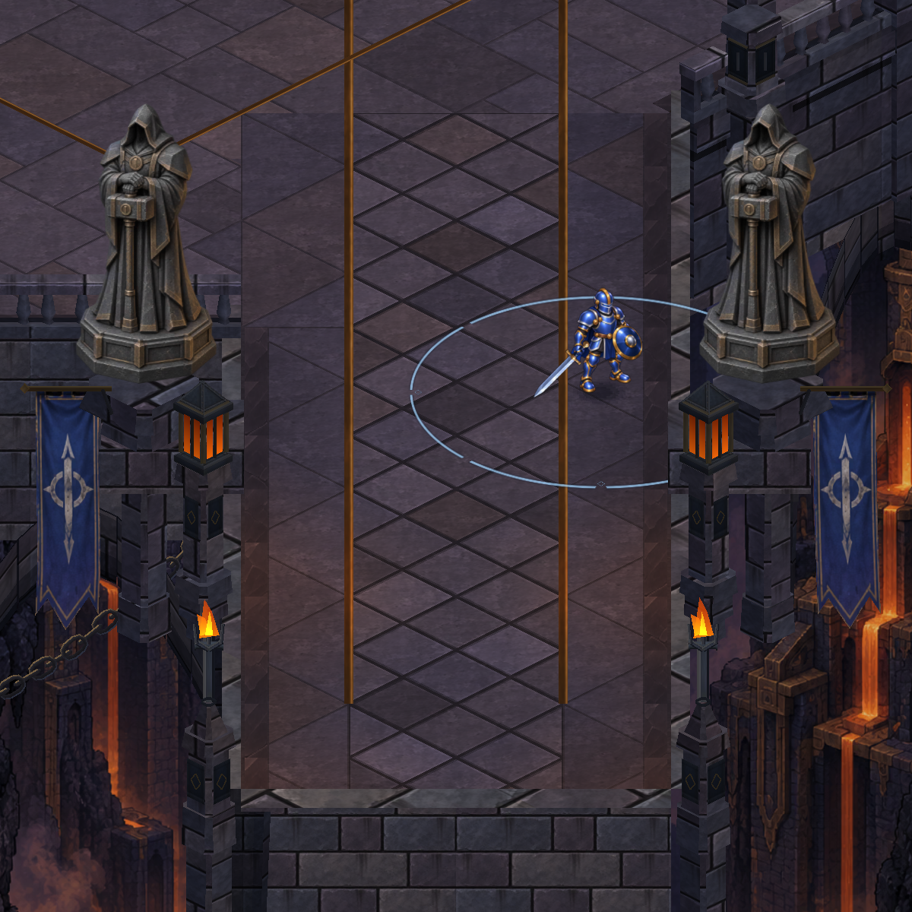
Önce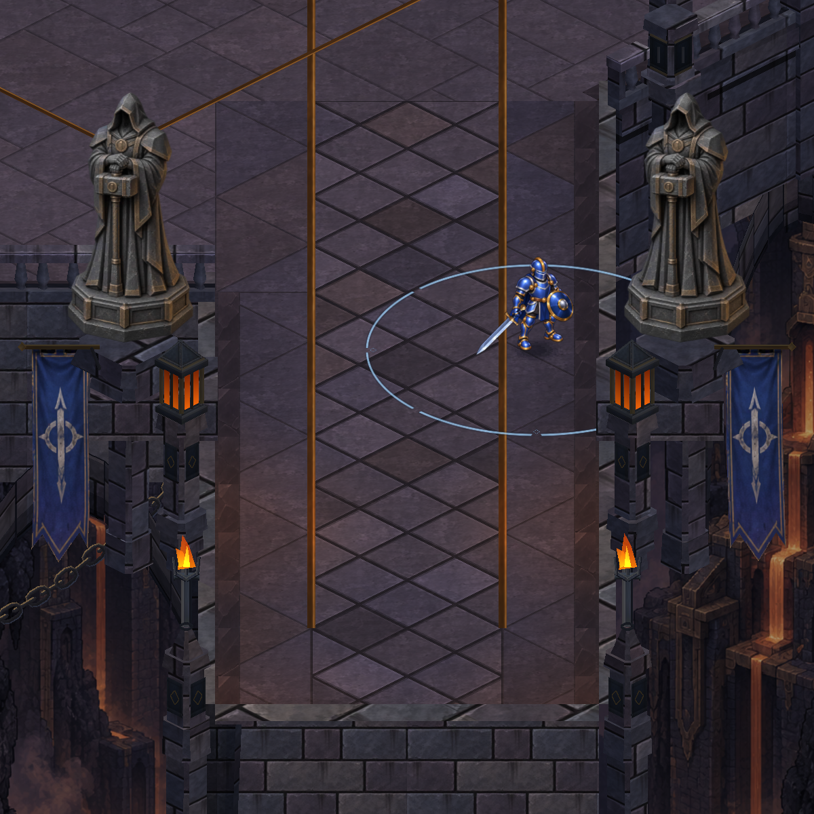
SonraS23 — gerçek cihaz kontrolü
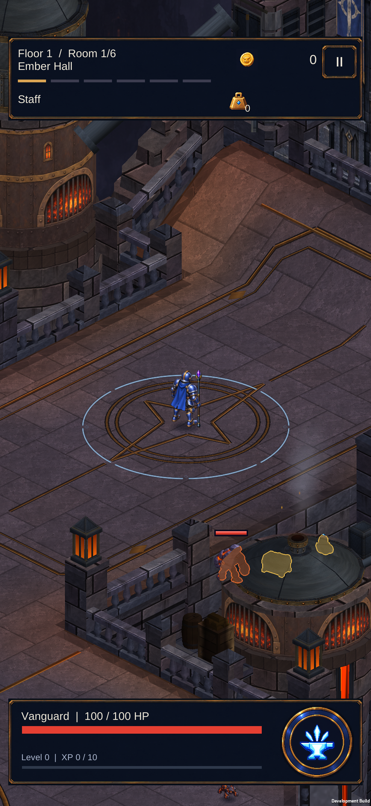
Kazan kapakları, taş ve yapı arkasındaki siluetler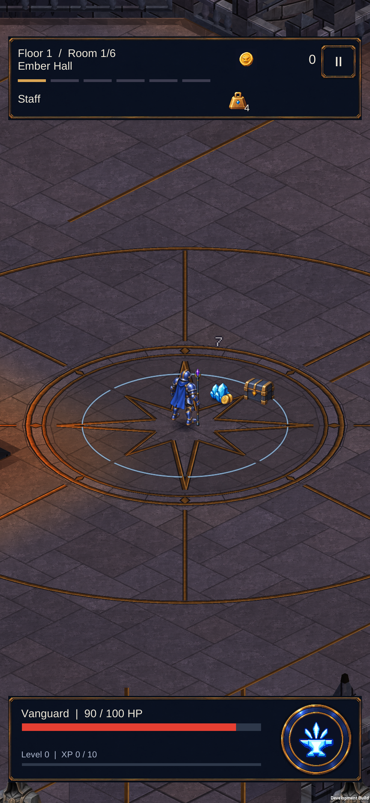
Normal Staff savaşı, hasar ve ödüller395 .NET, 415 EditMode ve 149 PlayMode testi geçti. APK kuruldu, profil ve mevcut geliştirme ayarları korundu. Unity incelemesindeki konumlar sahnelenmiştir; telefon kareleri gerçek sürükleme ve savaş görüntüleridir. Bu paket yeni bir uzun süreli performans ölçümü içermez.
Tam harita · Kapsam ve doğrulama